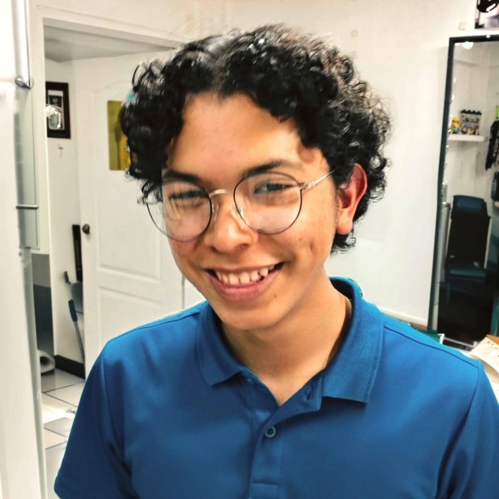

5.º Festival de Arte
ESCOLARIS 2026
“Entre luces y pantallas, museo sin muros”

Israel
Compositor • Director
Israel es un artista con una trayectoria destacada en el ámbito de la música académica, la formación artística y la gestión cultural. Con una vocación sólida por la enseñanza desde los 15 años, ha dedicado su carrera al acompañamiento artístico de niños y jóvenes.
Graduado de la Escuela Municipal de Música y actual Director de la Orquesta de la Universidad del Valle de Guatemala, se distingue por su liderazgo y compromiso con la excelencia. Su labor trasciende la interpretación, enfocándose en procesos formativos que promueven la sensibilidad y la disciplina.
Como compositor, su Concierto para viola escrito para la Orquesta Sinfónica Nacional de Guatemala es testimonio de su madurez creativa y su aporte fundamental al patrimonio musical contemporáneo de nuestro país.
"Su pasión por la enseñanza inspira a las nuevas generaciones a ver el arte como un medio de formación integral y crecimiento humano."